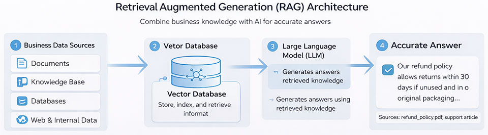

- internal documents
- knowledge bases
- databases and spreadsheets
- support tickets and reports
- document repositories
Turn your business data into intelligent actions, automation, and measurable growth. We build production-ready AI solutions that solve real business problems—not just prototypes.
Our solutions include:
With the right implementation approach, businesses can start seeing tangible results within weeks—not months.
Many organizations begin their AI journey by implementing targeted solutions that deliver immediate business value. Cybermax helps companies quickly deploy AI solutions such as:
Provide instant responses to customer questions through website chat, support portals, and internal help desks. AI assistants can answer common questions, retrieve information from knowledge bases, and assist support teams with faster responses.
This can also integrate with our AI Chatbot Development services to provide intelligent customer engagement across digital channels.
Automatically generate business proposals, summaries, and client reports using AI. These systems help teams save significant time on documentation while ensuring consistency in business communication.
Enable employees to search internal documents, policies, reports, and knowledge repositories using natural language questions. AI assistants can quickly retrieve relevant information from large volumes of company data.
AI systems can analyze contracts, reports, research documents, and operational data to extract key insights and summaries. This helps organizations process large volumes of information more efficiently.
Marketing teams can use AI tools to generate blog articles, product descriptions, campaign ideas, and social media content quickly while maintaining consistent messaging.

One of the most powerful enterprise AI architectures today is Retrieval Augmented Generation (RAG). RAG combines large language models with your organization’s internal knowledge sources so that AI can retrieve relevant information before generating responses.
RAG systems allow AI to access real-time business knowledge stored in:
Cybermax develops RAG-based AI assistants that can:
Generative AI offers several practical advantages for small and mid-size organizations.
AI copilots help employees draft emails, generate reports, and analyze data faster-reducing manual effort and improving turnaround time.
AI assistants provide instant, 24/7 responses across support channels, improving customer satisfaction and handling high query volumes efficiently.
Tasks like document processing and report generation can be automated, freeing teams to focus on higher-value work.
AI analyzes large volumes of data to generate summaries and actionable insights, enabling faster decision-making.
Automation reduces manual workload, helping businesses optimize resources and lower operational expenses.
AI enables businesses to handle more work and customer interactions without increasing headcount, ensuring scalable growth.
Cybermax provides end-to-end services to design and implement AI solutions tailored to the needs of growing businesses
Different AI models perform better for different tasks. We evaluate and select the most suitable models based on:
This ensures that your AI solution delivers high performance without unnecessary cost.
Generative AI becomes far more valuable when connected to your company’s knowledge and documents.
We build systems that allow AI to retrieve information from:
This enables AI assistants to provide accurate answers based on your own business information.
AI copilots assist employees with everyday work.
Examples include:
These solutions help teams complete tasks faster and more efficiently.
To deliver reliable results, AI systems require carefully designed prompts and workflows.
Cybermax develops:
This allows AI to perform complex tasks across multiple systems.
We develop intelligent AI agents that can automate routine business operations.
Examples include:
These agents allow organizations to scale operations without increasing manual workload.
Generative AI can deliver measurable value across many areas of business operations. Below are some of the most common ways organizations are using AI today.
AI assistants can respond instantly to common customer questions and support requests.
Typical capabilities include:
This improves customer response times while reducing the workload on support teams.
Generative AI can support sales teams by helping them prepare proposals, analyze customer conversations, and generate follow-up communications.
Common AI sales tools include:
These tools allow sales teams to focus more on building relationships and closing deals.
Marketing teams can use AI to accelerate content creation and campaign development.
AI tools can assist with:
This allows marketing teams to produce more content while maintaining consistency and quality.
Many organizations struggle to efficiently manage internal knowledge.
AI-powered knowledge assistants enable employees to:
This dramatically improves access to institutional knowledge and reduces time spent searching for information.
Generative AI can analyze large volumes of business documents quickly.
Typical applications include:
AI-powered document processing allows teams to extract insights from large amounts of information quickly.
Cybermax uses a modern AI architecture designed for scalability, security, and affordability. Our solutions combine several key technologies:
Enable Our LLM Development expertise enables
Allow AI to access and retrieve relevant information from internal data, ensuring accurate and context-driven responses.
Connect AI with CRM systems, support platforms, and business tools, enabling automation within existing workflows.
Our Cloud Solutions enable scalable, reliable, and secure deployments - ensuring high performance while safeguarding your business data.
Our implementation approach is designed to deliver working AI solutions quickly and cost-effectively.
Identify high-impact AI use cases aligned with business goals and assess data readiness, feasibility, and potential ROI.
Design the solution architecture and build a proof-of-concept (PoC) to validate feasibility and key functionalities.
Integrate AI models with existing systems, APIs, and workflows to ensure seamless business operations.
Validate performance, accuracy, and security, while refining models using real-world data and feedback.
Deploy into production and continuously monitor, optimize, and enhance performance over time.
We focus on solving real business problems—whether it’s automating support, improving lead conversion, or optimizing workflows—rather than deploying generic AI.
Our structured approach enables quick prototyping and faster deployments, allowing businesses to start seeing measurable results early.
We seamlessly integrate AI solutions with existing systems such as CRM, ERP, APIs, and databases, ensuring minimal disruption and maximum efficiency.
Solutions are built to scale with your business while maintaining optimal performance and controlled costs.
From strategy and development to deployment and optimization, we manage the complete AI lifecycle.
We go beyond implementation by continuously improving systems, ensuring they evolve with your business needs.
Cybermax provides AI integration services across a wide range of industries.
Generative AI integration involves embedding advanced AI models into your existing business systems, applications, and workflows to automate tasks, generate content, and enhance decision-making. It enables businesses to leverage AI capabilities such as text generation, automation, and intelligent insights directly within their operations.
Generative AI integration helps businesses improve efficiency, reduce manual work, and enhance customer experiences. It can automate content creation, streamline workflows, improve decision-making, and enable intelligent automation across departments such as customer support, sales, and operations.
Yes, Generative AI solutions can be seamlessly integrated with existing systems such as CRM platforms, ERP software, databases, APIs, and internal tools. This allows businesses to enhance their current workflows without replacing existing infrastructure.
Common use cases include AI chatbots, content generation, document summarization, customer support automation, sales assistants, knowledge management systems, and workflow automation. These applications help businesses improve productivity and deliver better user experiences.
The cost of Generative AI integration depends on the complexity of the solution, data requirements, and system integrations. Basic implementations may start from a few lakhs, while advanced enterprise-grade solutions can require higher investment depending on scale and customization.
Implementation timelines vary based on the project scope. A basic proof-of-concept can be developed within a few weeks, while full-scale integration with custom workflows and enterprise systems may take several weeks to a few months.
Traditional AI focuses on analyzing data and making predictions, while Generative AI creates new content such as text, images, and insights. Generative AI is more advanced in handling unstructured data and enabling natural interactions through language-based systems.
Not necessarily. Many Generative AI solutions can work with existing business data or pre-trained models. In some cases, minimal data is required to start, and systems can be enhanced over time with additional data and training.
Yes, when implemented correctly, Generative AI solutions can be secure and compliant with data protection standards. Security measures such as data encryption, access control, and secure API integrations help protect sensitive business information.
Accuracy is ensured through techniques such as prompt engineering, model fine-tuning, validation processes, and continuous monitoring. Systems are optimized over time using feedback loops and real-world usage data to improve performance and reliability.
Yes, Generative AI solutions can be tailored to your specific workflows, data, and business requirements. Customization ensures better performance, relevance, and alignment with your operational goals.
Let us empower your business, improve your efficiency and give you the competitive advantage!
Contact us